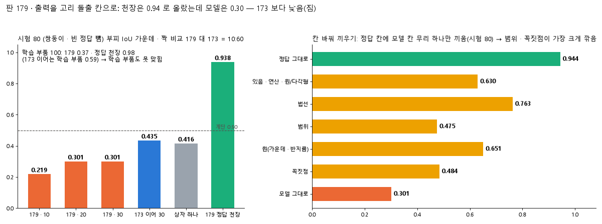

실험 m2_tr0179_h000_고리돌출
179 고리 돌출 칸 — 출력을 「단면 고리 + 돌출」 칸으로 바꾸면 실제 CAD 가 맞아지나 (11-10 · 모델179.py · 손으로 정리)
분석
한 줄로
물음: tr178 에서 「단면(원 · 다각형 8) + 돌출」 문법은 처음 보는 실제 CAD 에서 천장 0.86 이었다. 출력을 이 문법 칸으로 바꾸면 173(0.435)보다 나아지나?
답: 아니다. 정답 칸 천장은 시험 80 에서 0.938 로 올랐지만 모델은 0.301 로 173 이어(0.435)에 졌다(짝 비교 10 승 60 패). 배운 부품 100 도 0.37 이라 「처음 보는 부품을 못 한다」가 아니라 배우지를 못했다.
왜 이 판을 했나
tr178 에서 지금 칸 문법의 천장이 0.61 이라 0.80 계단을 막는다는 것을 쟀다. 다각형 8 · 돌출 K 개 문법은 천장이 0.86~0.91 이라 문법 벽은 풀린다. 우리 목표는 그림 → CAD 코드이고, 이 판은 Fusion 360 실제 CAD 로 했다.
바꾼 것 하나
출력 칸. 칸 6 개마다 있음 · 연산 4(더하기 · 빼기 · 교차 · 앞 칸 구멍) · 원/다각형 · 법선 · 범위 [a, b] · 원(가운데 · 반지름) · 꼭짓점 8 × 3 = 숫자 40. loss 는 BCE + CE + 10 × L1(다각형은 시작점 8 × 방향 2 중 최소). 173 이어 30 무게에서 시작(출력 층만 새로) · 1e-4 · 30 바퀴.
결과

| 시험 80 부피 IoU 가운데 | 10 | 20 | 30 | 대조 |
|---|---|---|---|---|
| 179 | 0.219 | 0.301 | 0.301 | 173 이어 0.435 |
| 정답 칸 천장 | 0.938 |
시험 80 = Fusion 시험 100 에서 학습 쌍둥이 16 과 빈 정답(얇은 부품) 4 를 뺀 것.
왜 이렇게 나왔나
확인한 것
- 배운 부품 100: 179 0.37 · 정답 천장 0.984 → 외우지도 못함.
- 칸 바꿔 끼우기(정답 칸에 모델 값을 무리 하나만): 그대로 0.944 · 구조 0.63 · 법선 0.763 · 원 0.651 · 범위 0.475 · 꼭짓점 0.484 · 모델 그대로 0.301.
- 상관: 반지름 0.95 · 법선 약 0.9 인데 범위 시작 0.53 · 예측 퍼짐 0.087 대 정답 0.246 — 범위가 평균으로 뭉갰다.
- 원인(tr180 에서 확인): 정답이 한 가지 꼴이 아니었다. 스케치 평면 자리가 칸의 34 % 에서 바닥이 아님 · 다각형 칸의 46 % 에 변 위 남는 꼭짓점이 아무 데나 · 범위 끝이 부품 크기의 34 배까지 튐.
짐작 (아직 확인 안 함)
- 관문(정답 천장)은 「정답을 넣으면 지어지나」만 재서, 같은 모양을 여러 숫자로 적는 애매함을 못 잡았다.
한계
- 시드 하나 · 시험 80.
- 첫 잼은 내 코드 잘못(
재기인자)으로 모든 점수가 0 이었다 — 고친 뒤 다시 잼.
배운 것과 다음
정답 천장이 높아도, 같은 모양을 여러 숫자로 적는 정답이면 모델은 평균을 낸다.
- 정답을 한 가지 꼴(표준형)로 → tr180.